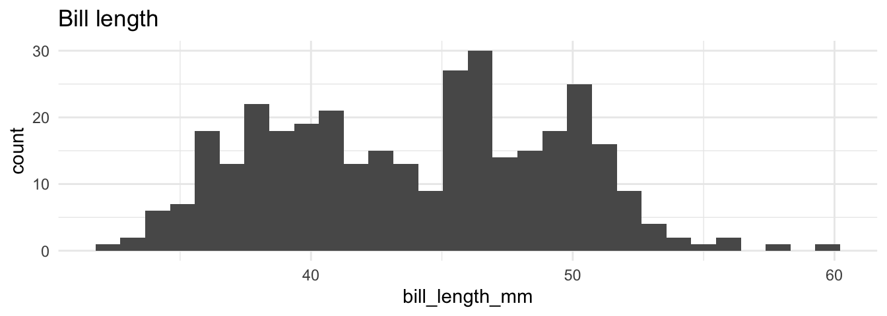
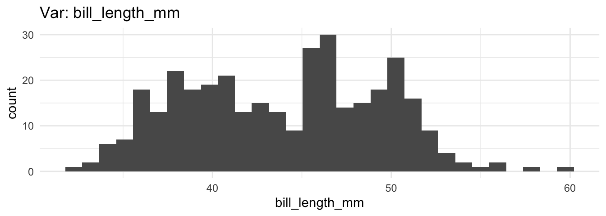
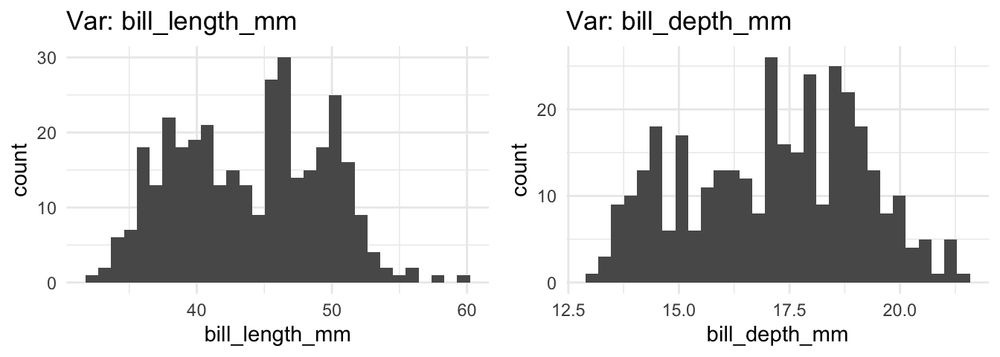
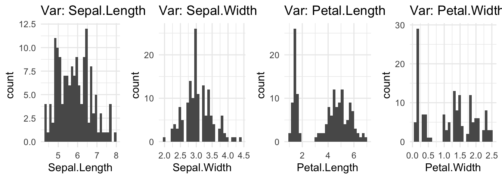
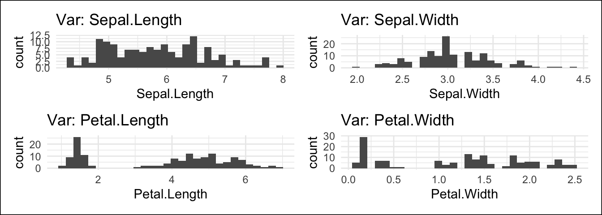
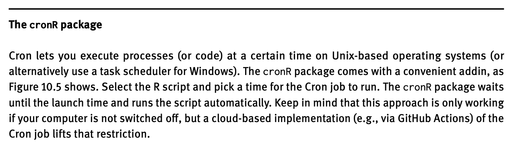

# Tutorial 8 needs the following packages:
library(dplyr)
library(ggplot2)
library(magick)
library(palmerpenguins)
library(purrr)
library(tesseract)8 Automate work
Welcome to the tutorial of the Practice R book (Treischl 2023). Practice R is a text book for the social sciences which provides several tutorials supporting students to learn R. Feel free to inspect the tutorials even if you are not familiar with the book, but keep in mind these tutorials are supposed to complement the Practice R book.
Chapter 10 emphasized that we are not supposed to repeat our-self in terms of writing code and I highlighted that R can be used to do the boring stuff. To this end, we made dynamic reports with rmarkdown and we focused on the process of creating and sending them automatically (Allaire et al. 2022).
Unfortunately, we cannot build a document in a tutorial, but we can level up your skills to automate work. We made only a graph to illustrate the principle of dynamic reports in Chapter 10, but we can further improve the automation process by writing our own functions for this task. Thus, we will learn to automate the process of creating graphs and explore purrr once more (Henry and Wickham 2022). In addition, I briefly introduce packages that let us automate other boring tasks.
8.1 Automate graphs
Suppose someone asked you to create a report with many descriptive graphs. If the report contains many graphs - say a histogram for all numerical variables - the chance is high that we start to repeat ourselves in terms of code. You may create a customized plot with ggplot2 (Wickham, Chang, et al. 2022), but for each variable we still need to copy the code and then change the plot slightly. Such a copy and paste approach makes the code messy and we repeatedly need to adjust each graph manually if we find an error. 
For this reason, I introduced the advantages of dynamic reports, but we can also make functions that help us to create graphs more efficiently. With functions, we minimize the urge to repeat ourselves. They make our work less error prone because if the function includes a mistake, the error would appear each time we call the function, making it easier to spot them. Therefore, our work becomes more flexible, because we have to change the code only in one place and repeat it over and over for an entire document.
Suppose you need to visualize all numerical variables from the penguins data with a histogram (Horst, Hill, and Gorman 2022). We will use the next code as an example to build functions. It is not important what the plots actually looks like, as we can still adjust all kind of graphical appearances and include such steps in the created function. Let’s keep it simple to illustrate how the approach works. As a bare minimum let’s pick a numerical variable (e.g., bill_length_mm) and give the plot a title.
# Pick a variable and give a title
ggplot(penguins) +
geom_histogram(aes(x = bill_length_mm)) +
ggtitle("Bill length")
I already created the body of a function to build such a histogram (hist_fun) and you need to add the code to create the graph. First, insert the code from the last console. Next, we need to adjust the input variable. There are different ways to use ggplot2 in functions. Adjust the code and fill in .data[[x]] instead of x, it will hand over the column vector from the function call. As always, give it a try before you consider the solution and check if the function is working.
# A function to create histograms
hist_fun <- function(data, x) {
ggplot(data) +
geom_histogram(aes(x = .data[[x]])) +
ggtitle(paste("Var:", x))
}
# Did it work?
hist_fun(penguins, x = "bill_length_mm")
Functions reduce our workload, but the approach is quite repetitive, especially if we display each numerical variable with a histogram. Why don’t we create one plot with a histogram for each numerical variable? We used the DataExplorer package for this task in Chapter 3, but with your own function you will be able to create a plot in the exact same way as you want them.
First we need to identify which variables of a data frame are numerical. The select_if() function from dplyr lets us pick variables under a specified condition (Wickham, François, et al. 2022). As the next console shows, it returns variables which are double (numerical, factor) if we insert the is.double (is.numeric; is.factor) function.
# dplyr::select_if
dplyr::select_if(penguins, is.double) |>
head()#> # A tibble: 6 × 2
#> bill_length_mm bill_depth_mm
#> <dbl> <dbl>
#> 1 39.1 18.7
#> 2 39.5 17.4
#> 3 40.3 18
#> 4 NA NA
#> 5 36.7 19.3
#> 6 39.3 20.6However, we need a vector with the corresponding variable names to create the plot. Insert the select_if function into the names() function to get the variable names.
# Only numerical input
names(dplyr::select_if(penguins, is.double))#> [1] "bill_length_mm" "bill_depth_mm"Now that we have a vector with variable names and a function to create histograms, enables us to use purrr (Henry and Wickham 2022). The map function returns a list with the histogram for each input variable. First, assign the results of the last console as numerical_variables. Next, we apply the hist_fun() for each input of numerical_variables.
# Iterate with purrr
numerical_variables <- names(dplyr::select_if(penguins, is.double))
plots_list <- purrr::map(numerical_variables, ~ hist_fun(penguins, x = .x))Finally, use the plot_grid function from the cowplot package to combine them all in one graph (Wilke 2020). The function only needs a plotlist in order to combine all the plots from the created list (plots_list) in one graphical output.
# Insert your plotlist
cowplot::plot_grid(plotlist = plots_list)
Now it’s up to you to combine these steps. Create a function (all_hist) that takes all numerical variables from a data frame, then create a histogram for each variable with purrr and combine all into a single graph with cowplot. Finally, check if the function works.
# Create a function that returns several histograms
all_hist <- function(data) {
numerical_variables <- names(dplyr::select_if(data, is.double))
plots_list <- purrr::map(numerical_variables, ~ hist_fun(data, x = .x))
plot <- cowplot::plot_grid(plotlist = plots_list)
return(plot)
}
# Did it work?
all_hist(penguins)
Let us create an error message and adjust the options to illustrate how to improve the approach. So far our function works only with numerical variables, but what happens if the data does not contain one? The first two variables of the penguins data are categorical which gives us the opportunity to inspect which error our function returns if there is no numerical input.
# What happens if there is an error?
all_hist(penguins[1:2])#> Error in grobs[[i]]: subscript out of boundsThe error message is pretty obscure, but we can improve it: It should warn us in a reasonable manner and abort the function. Consider the numerical_variables vector. If there are no numerical variables, it has a length of zero and the function is supposed to abort.
# names_num is zero if the data has no numerical input
numerical_variables <- names(dplyr::select_if(penguins[1:2], is.double))
numerical_variables#> character(0)The cli package provides helpers for developing command line interfaces and we can use the cli_abort function from it (Csárdi 2022). It aborts the function call and returns a warning message as the next console illustrates.
# CLI provides helpers for developing Command Line Interfaces
cli::cli_abort("What is the problem?")#> Error:
#> ! What is the problem?Insert the cli_abort() function together with an if condition in the all_hist() function. Only if the names_num vector has a length of zero, the cli_abort function should abort the function call and returns a warning.
# Add if and cli::cli_abort
all_hist <- function(data) {
numerical_variables <- names(dplyr::select_if(data, is.double))
if (length(numerical_variables) == 0) {
cli::cli_abort("Input must be a double-precision vector.")
}
plots_list <- purrr::map(numerical_variables, ~ hist_fun(data, x = .x))
plot <- cowplot::plot_grid(plotlist = plots_list)
return(plot)
}
# Do we get an error?
all_hist(penguins[1:2])#> Error in `all_hist()`:
#> ! Input must be a double-precision vector.It goes without saying that we can further improve the function by adding and adjust the options that generates the plot.
For example, add the ncol option in the plot_grid() function. It lets us determine the number of columns used to plot the graphs. Don’t forget to insert the option also in the function() and give a default value that suits your purpose.
# Adjust the plot_grid function
all_hist <- function(data, ncol = 3) {
numerical_variables <- names(dplyr::select_if(data, is.double))
if (length(numerical_variables) == 0) {
cli::cli_abort("Input must be a double-precision vector.")
}
plots_list <- purrr::map(numerical_variables, ~ hist_fun(data, x = .x))
cowplot::plot_grid(plotlist = plots_list, ncol = ncol)
}
# The all_hist with ncol
all_hist(iris, ncol = 4)
Finally, one last thought about the themes. If we adjust the theme() inside the function, the same styling rules are applied. However, we can also create our own theme function which increases the flexibility, since we can also apply the theme also to other graphs.
Creating a theme is not complicated. We best start by using a predefined theme and only adjust it where the theme does not fit for our purpose. As the next console shows, the my_theme() function relies on a ggthemes theme (Arnold 2021); to give you an idea how it works I only adjusted the text size of the title and the caption. After we created the theme, we can integrate it in the function or call it after we created the graph, as the next console shows.
# Create a customized theme
my_theme <- function() {
ggthemes::theme_gdocs() +
theme(plot.title = element_text(size = 16)) +
theme(plot.caption = element_text(size = 10))
}
# Apply it where needed
plot <- all_hist(iris, ncol = 2)
plot + my_theme()
8.2 Automate the boring stuff
Students in the social sciences learn R to apply statistics, but R helps us also to automate repetitive tasks. This last section does not necessarily have applied empirical research in mind, but it tries to raise awareness about how we can get the boring stuff done (with R and different packages).
8.2.1 The officer package
Till now we focused on PDF reports, but the officeverse package encompasses several packages and functions to work with Microsoft Office files. For example, the officer package will help you to create and change all sorts of MS Office documents. 
Suppose that a data set gets an update and we are supposed to do the same with the corresponding Word reports. There is one Word document for a long list of countries and we certainly do not want to make the update manually. For the sake of simplicity, suppose we only need to add a new page, insert a new headline, and provide an updated plot for each country. Therefore, we first need a new plot that we are supposed to add:
# New plot
plot <- ggplot(penguins) +
geom_histogram(aes(x = bill_length_mm)) +
ggtitle("Bill length")The next console shows how such a minimal but effective update may look like based on a simple workaround. First, we read the document with read_docx; next we add a new page (body_add_break), a new header (body_add_par), and the plot (body_add_gg). Finally, we are able to export the new document with the print() function and the target option.
library(officer)
# Read and update my_doc
doc_updated <- read_docx(path = "my_doc.docx") |>
body_add_break(pos = "after") |>
body_add_par("Updated results", style = "heading 1") |>
body_add_gg(value = plot, style = "normal")
# Save updated doc
print(doc_updated, target = "doc_updated.docx")Of course, this was a simple workaround for illustration purposes. Consider the package website for more information about the officeverse.
8.2.2 The pdftools package
Say you have a bunch of PDF files and you need to combine them in a single file. Or the other way around, you have a large PDF file but for some reasons you need to split them. Certainly there are different software solutions available, but your time is too precious to add each page manually or apply another repetitive task to the file(s). The pdftools and the qpdf package has corresponding functions to combine, split, and perform further functions when working with PDF files (Ooms 2022a, 2022b). 
# Join several pdf files into one
qpdf::pdf_combine()
# Split a single pdf into separate files, one for each page
qpdf::pdf_split()In the case of image files, consider the magick package (Ooms 2021).
8.2.3 The magick package 
Suppose you have many images that are saved a PDF file and you need to convert them into png files. As before, you can open all files in a graphic software and export each of them manually. Or you can use the magick package to read the files and convert them into a certain format, as the next console highlights. The package provides many features to read, adjust, and convert image files. Consider the package documentation because it outlines more features that I can introduce.
# Convert Images
img <- image_read_pdf("figure.pdf")
# Write as PNG
image_write(img, "output.png")Chapter 10 introduced packages and features to automate work. Certainly, we cannot automate all kinds of work with R, but keep in mind that there are often solutions are available to get recurring tasks done, before you start to repeat yourself several times. I did not introduce the magick package only because of it lets us convert images. I did so because it has many features to work with images and sometimes you will be surprised about the numerous possibilities of R and its landscape.
Suppose you want to analyze texts, but they are only available as an image files. I made a screen shot of an info box from the Practice R book. The image shows the first lines of the cronR info box.

The magick package helps us to extract this text from the image files. As the next console shows, we need to read the image first before we can extract the text.
The image_ocr() function (optical character recognition) scans the file and extract the data. The functions relies on tesseract, which is an open OCR engine that supports over 100 languages. To make the output a bit easier to read in the console, I used the stringr package, which I will introduce in Chapter 11 in detail.
# Extract text via OCR
library(tesseract)
library(stringr)
txt <- image_ocr(img)
text <- str_split(txt, "\n")
text <- as_vector(text)
head(text)
Instead of repeating yourself, use your time wiser and learn something new about R and its environment. How about D3 (Data-Driven Documents), which is a JavaScript library to create interactive visualizations for the web. The r2d3 package let you integrate D3 into R (Strayer, Luraschi, and Allaire 2022). The next console illustrates that the package runs a JavaScript file (voronoi.js) and returns an example made by Mike Bostock.
library(r2d3)
# voronoi.js is based on: https://bl.ocks.org/mbostock/4060366
r2d3(d3_version = 4, script = "d3/voronoi.js")If you are not in the right mood to learn something new, how about playing an old school video game? The Rcade package lives on GitHub only, but thanks to Romain Lesur you can play Tetris, Mario, or Pacman directly from R.
# devtools::install_github('RLesur/Rcade')
# library(Rcade)
Rcade::games$PacmanThus, be curious and don’t miss the opportunity to automate work that does not need your full attention, because it will also improve your skills. In a similar sense, consider to write your own R package if you have invested a lot of time and effort in your work. Depending on your goal, this might not be necessary but all the functions would be available if you combine them in a package. Moreover, I couldn’t resist to highlight the possibility one more time, especially regarding the American Chopper meme.

Don’t let fancy packages such as ggplot2 discourage you when considering to create your own package for the first time: you and your ideas are worth the time and effort. Keep that in mind if you start fooling around with the idea.
8.3 Summary
Keep the following R functions and packages from Chapter 10 in mind:
- Keep distinct/unique rows (
dplyr::distinct) - Concatenate strings (
paste) - Format and interpolate a string (
glue: Hester and Bryan 2022) - Render R Markdown (
rmarkdown::render) - Find your files (
here:: Müller 2020) - Control flow (e.g.,
if, for loop) - Play a short sound (
beepr: Bååth 2018) - Automatic reporting of R objects (
report:: Makowski et al. 2022) - Send an email (
blastula: Iannone and Cheng 2020) - Interpret input text as Markdown-formatted text (
blastula::md) - List the Files in a directory/folder (
list.files) - Apply a function to each element of a vector (
purrr::map)